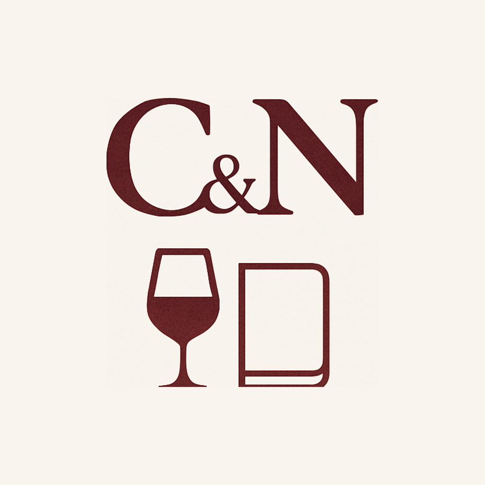

A good wine.
A lasting impression.
Eight identities for a journal of wines, places, and personal discoveries. Rooted in the app’s warm paper, Bordeaux ink, and quiet wine-label elegance.
Find your favorite direction ↓The collection
Select a concept to see it in the app. Tap a heart to shortlist it. Every design below includes a 32 px and 16 px preview.
One identity. Every touchpoint.
Illustrative placements based on the app’s login and home screens, plus a store listing and phone home screen.
What feels like us?
Pick two or three favorites, then tell us what you love: the symbol, the lettering, the color, or the overall feeling. Elements can be combined in the next round.
Existing artwork & design references

The existing artwork combines C&N, a wine glass, and a journal. These explorations each give one idea more room. Colors and serif lettering come from styles/theme.js; placements are informed by app/login.js and app/(tabs)/home.js. Sample wine and account data are illustrative.